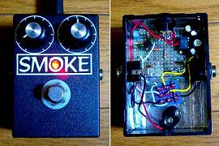
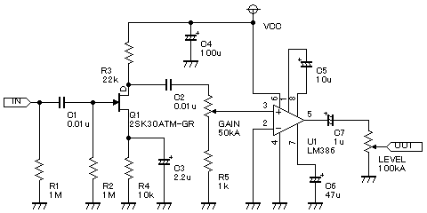

runoffgroove.com Big Daddy 改
2007年11月28日 カテゴリー：
自作エフェクター（アナログ）

Big Daddy
を改良しました。もとの回路ではICのゲインの可変幅が50倍～200倍くらいなんですが、それではどうしてもゲインを低く設定できません。↓のように回路を変更しました。

ICへの入力を変化させるようにしました。これでかなりコントロールしやすくなりました。